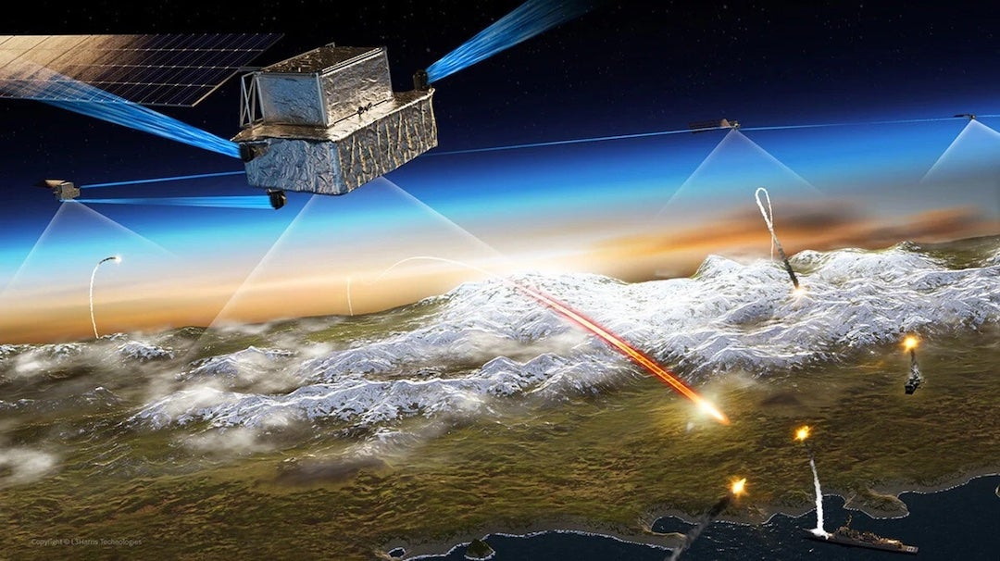

L3Harris (LHX)
W kontekscie: Łączność: optyczne ISL, downlink i latencja
L3Harris Technologies to amerykański koncern aerospace & defense, powstały w 2019 r. z fuzji L3 Technologies i Harris Corporation, a w 2023 r. powiększony o Aerojet Rocketdyne. W obszarze łączności optycznej spółka funkcjonuje jako jeden z czołowych amerykańskich dostawców terminali laserowych do komunikacji międzysatelitarnej (OISL), z wyraźnym ukierunkowaniem na rządowy i wojskowy segment USA. To właśnie ten rodowód - sensory kosmiczne, elektro-optyka i systemy kierowanej energii - czyni L3Harris naturalnym wykonawcą dla architektury rozproszonych konstelacji obronnych, gdzie laserowe łącza między satelitami spinają warstwę śledzącą i transportową w jednolitą sieć. Rozwija to wątek Optyczne łącza międzysatelitarne (laser ISL) i roadmapy Tbps.
Praktyczną ekspozycję na ten temat budują dwa działy. Segment Space & Airborne Systems dostarcza satelity i ładunki z terminalami laserowymi dla Space Development Agency (SDA) w ramach programów Tracking Layer Tranche 0/1/2 - to rdzeń obecności w optycznych ISL dla obronności USA. Segment Communication Systems odpowiada za taktyczne terminale SATCOM (Hawkeye 4 Lite, Panther II VSAT) oraz modemy satelitarne (A3M, nowy 5650C2/MP opracowany z Comtech). Dla architektury orbitalnych centrów danych istotny jest tu downlink i jego ograniczenia fizyczne, co łączy się z wątkiem Downlink do Ziemi: RF Ka/V band kontra optyczne stacje naziemne i wpływ chmur.
Przewaga L3Harris jest wojskowo-rządowa, nie komercyjna. Spółka należy do wąskiej grupy 5 wiodących dostawców terminali OISL na świecie (obok Tesat, Mynaric, Ball Aerospace i Thales), przy czym wg Dataintelo top 5 kontroluje ~68% rynku w ujęciu terminal value (🟠 Dataintelo, 2025). Pozycję cementują kontrakty rządowe USA z terminalami optycznymi: SDA Tranche 0 (193 mln USD, 4 satelity; 🟠 satnews/SDA), Tranche 1 (do 700 mln USD, 14 satelitów; 🟠 satnews, 18 lip 2022) oraz Tranche 2 (do 919 mln USD, 18 satelitów; 🟠 SatelliteToday, 17 sty 2024). Do tego dochodzi strategiczna inwestycja w Mynaric (7,2% udziału za ~11,4 mln USD w 2022 r., z pozycją "preferred provider" laser communications; 🟠 Aviation Week, 2022), która zabezpieczała dostęp do komercyjnej produkcji wolumenowej terminali. Mechanizm latencji i podziału przetwarzania między orbitę a Ziemię, kluczowy dla sensownego wykorzystania tych łączy, rozwija Latencja orbita-Ziemia kontra zastosowania: trening wsadowy vs inference real-time.
Materiały spółki
Grafiki z materiałów spółki / IR (prawa właściciela, użycie redakcyjne). Pełny rejestr:
Spolki/assets/_licencje.json.

Koncepcja wizualizacji satelitów SDA Tracking Layer. Źródło: www.satellitetoday.com; licencja: materiały spółki / IR - prawa właściciela, użycie redakcyjne.
Pozycja rynkowa
L3Harris to wiodący amerykański dostawca terminali laserowych ukierunkowany na segment rządowo-wojskowy, z satelitami SDA już na orbicie, w produkcji oraz w backlogu. Trzeba jednak postawić sprawę wprost: w skali całego konglomeratu łączność optyczna jest niszą marginalną i nieujawnianą osobno. Spółka nie raportuje tego obszaru jako odrębnej linii, a kontrakty SDA oraz terminale i modemy są rozproszone między segmenty SAS i CS, które razem generują ponad 12 mld USD rocznie. Dla skali: przychód grupy w FY2024 (zakończony 3 stycznia 2025) wyniósł 21,3 mld USD wobec 19,4 mld USD w FY2023 (🔵 L3Harris Q4 2024 Earnings Presentation, 30 sty 2025), a w segmentach Space & Airborne Systems odpowiadał za 6,87 mld USD, Integrated Mission Systems za 6,84 mld USD, Communication Systems za 5,46 mld USD, a Aerojet Rocketdyne za 2,35 mld USD (🔵 tamże). Sama nisza optyczna to ułamek procentowy tej kwoty - jej dokładny udział jest NIE UJAWNIONY.
Bieżąca dynamika grupy pozostaje solidna: w Q3 2025 (zakończony 3 października 2025) przychód sięgnął 5,7 mld USD przy wzroście organicznym 10%, book-to-bill 1,2x i backlogu 36,3 mld USD (🔵 L3Harris Q3 2025 Earnings Call, 30 paź 2025), ale są to liczby całego koncernu, nie samej łączności optycznej.
W gronie konkurentów wyróżniają się gracze wyspecjalizowani. Tesat-Spacecom (Airbus) dysponuje największym flight heritage - ponad 100 terminali laserowych, programy EDRS, Sentinel oraz SDA Tranche 0 (🟠 Dataintelo, 2025). Mynaric (obecnie część Rocket Lab) jest liderem komercyjnej produkcji wolumenowej z terminalem CONDOR Mk3 (~9 kg, 10 Gbps; 🟠 Dataintelo, 2025). W szerszym zestawieniu rynkowym pojawiają się także Ball Aerospace i Thales jako część top 5 kontrolującego ~68% wartości rynku. W odniesieniu do amerykańskiej obronności naturalnymi rywalami o kontrakty SDA pozostają również Lockheed Martin i Sierra Space, którzy obok L3Harris otrzymali zlecenia Tranche 2 (🟠 SatelliteToday, 17 sty 2024).
Ryzyka
Pierwszym i najważniejszym ograniczeniem jest marginalność niszy w skali koncernu. Łączność optyczna nie jest raportowana osobno i stanowi drobny ułamek przychodu przekraczającego 21 mld USD, więc nawet dynamiczny wzrost tego obszaru ma ograniczony wpływ na wyniki i postrzeganie całej spółki - inwestor kupujący LHX kupuje przede wszystkim zdywersyfikowany koncern obronny, a nie ekspozycję na laserowe ISL.
Drugim ryzykiem jest konkurencja i zmiany w łańcuchu dostaw. Wyspecjalizowani gracze (Tesat, Mynaric/Rocket Lab) konkurują heritage'em i wolumenem, a duże konstelacje komercyjne - SpaceX Starlink i Amazon Kuiper - integrują terminale optyczne wewnętrznie. Mechanizm jest taki, że im więcej operatorów buduje własne terminale, tym węższy staje się dostępny rynek zewnętrzny i tym większa presja na marże dostawców takich jak L3Harris. Kontekst tego, dlaczego Starlink bywa błędnie kwalifikowany jako rozwiązanie szerokopasmowe, porządkuje Weryfikacja tezy "Starlink nie szerokopasmowy" (mylenie terminala last-mile z backbone ISL).
Trzecim ryzykiem jest zależność od budżetu US DoD/SDA oraz ryzyko wykonawcze. Opóźnienia wynikające z Continuing Resolution lub przesunięć priorytetów obronnych mogą bezpośrednio uderzyć w harmonogramy i finansowanie kontraktów SDA, od których zależy niemal cała ekspozycja optyczna spółki. Dodatkowo L3Harris sygnalizował wyzwania na programach rozwojowych typu fixed-price w segmencie kosmicznym - taki model przerzuca ryzyko przekroczenia kosztów na wykonawcę, co przy złożonych ładunkach laserowych może obciążać marżę.
Powiązane spółki
Inne notowane spółki z raportu dzielące z tą firmą co najmniej jeden wątek tematyczny (wspólny rynek, technologia lub łańcuch wartości).
- Airbus SE (AIR) - PV (Sparkwing), optyka (Tesat), busy, serwis (EU)
Wspólne wątki: Łączność optyczna. - BAE Systems plc (BA) - Rad-hard procesory (RAD750/RAD5545); optyka (Ball)
Wspólne wątki: Łączność optyczna. - Mynaric AG (MYNA) - Pure-play terminale laserowe OISL (CONDOR) - WYCOFANA z giełdy, przejęta przez Rocket Lab (2026)
Wspólne wątki: Łączność optyczna.
Linkują tutaj
6 powiązanych notatek
- Mapa raportu Orbitalne / kosmiczne centra danych
- Sekcja Łączność: optyczne ISL, downlink i latencja
- Sekcja Bezpieczeństwo, geopolityka i realizm 10-letni
- Spółka Airbus (AIR)
- Spółka BAE Systems (BA)
- Spółka Mynaric (MYNA)